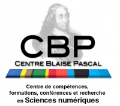
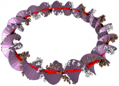
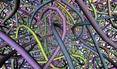
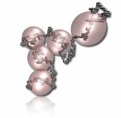
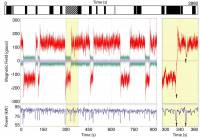
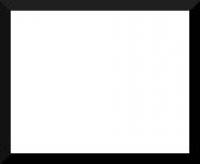
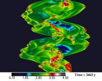

Workshops 2011¶
{kind=link}
Journées du Centre Blaise Pascal
Location : Centre Blaise Pascal, ENS de Lyon, France
29 Novembre, 2011
Paul Fleurat-Lessard, Laboratoire de Chimie, Ecole Normale Supérieure de Lyon, France
Claire Loison, Laboratoire de Spectrométrie Ionique et Moléculaire, Université de Lyon / CNRS, France
Cerasela Calugaru, CBP/PSMN, ENS Lyon, France

{kind=link}
Coarse-Grain Mechanics of DNA: Part II From Electrons to Oligomers
Location : CECAM-HQ-EPFL, Lausanne, Switzerland
August 30, 2011 - September 2, 2011
John H. Maddocks, Swiss Federal Institute of Technology Lausanne (EPFL), Switzerland
Ralf Everaers, École Normale Supérieure de Lyon, France
Helmut Schiessel, Instituut-Lorentz for Theoretical Physics, Leiden, The Netherlands

{kind=link}
Polymer Dynamics : Entanglements and Architectures
Location : Capri, Italy
July 26, 2011 to July 29, 2011
Ralf Everaers, École Normale Supérieure de Lyon, France
Daniel Read, University of Leeds, United Kingdom
Giovanni Ianniruberto, University Federico II, Naples, Italy
Peter Olmsted, University of Leeds , United Kingdom
Alexei Likhtman, University of Reading, United Kingdom

{kind=link}
Coarse-Graining Strategies and Methodologies for Polymeric and Biomolecular Assemblies
Location : Centre Blaise Pascal, ENS de Lyon, France
Launching event of the CFCAM-RA Node
July 5, 2011 - July 8, 2011
Barbara Capone, University of Vienna, Austria
Christos N. Likos, University of Vienna, Austria
Jean Pierre Hansen, University of Cambridge, United Kingdom
Vincent Krakoviack, Ecole Normale Supérieure de Lyon, France

{kind=link}
Rencontre thématique : Calcul des évènements rares
Location : Centre Blaise Pascal, ENS de Lyon, France
Launching event of the GDR PHENIX
23 Juin, 2011
Freddy Bouchet, Laboratoire de Physique, ENS Lyon, France

{kind=link}
Workshop sur les systèmes à longue portée
Location : Centre Blaise Pascal, ENS de Lyon, France
17 Juin, 2011
Doris Folini, Laboratoire de Physique, ENS de Lyon, France
Rolf Walder, Laboratoire de Physique, ENS de Lyon, France

{kind=link}
Journées du Centre Blaise Pascal
Location : Centre Blaise Pascal, ENS de Lyon, France
14 Juin, 2011
Paul Fleurat-Lessard, Laboratoire de Chimie, ENS de Lyon, France
Claire Loison, LaSIM, UCBL / CNRS, France
Emmanuel Lévêque, PSMN/Laboratoire de Physique, ENS Lyon, France
Ralf Everaers, CBP/Laboratoire de Physique, ENS Lyon, France
Cerasela Calugaru, CBP/PSMN, ENS Lyon, France